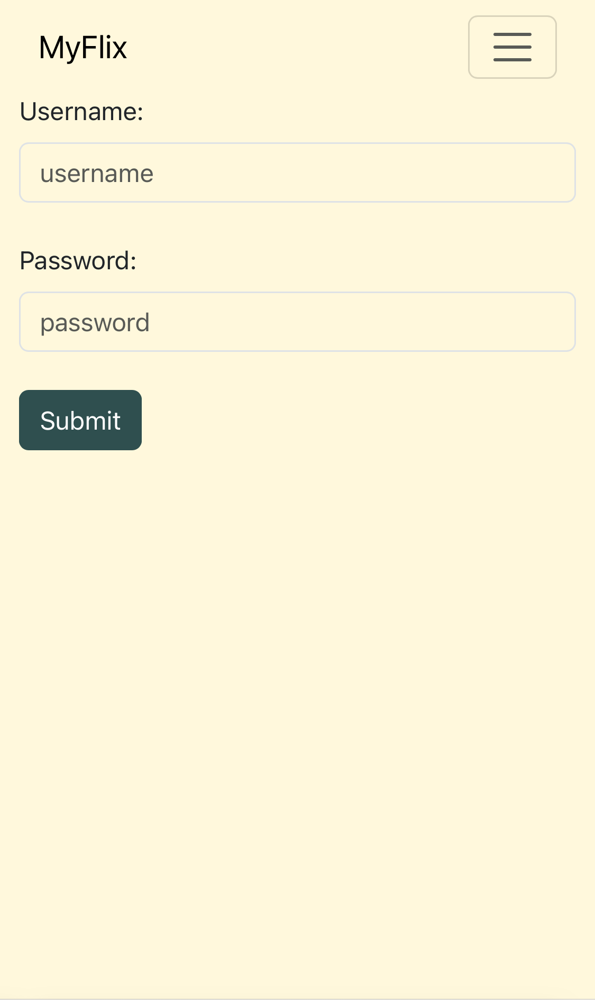
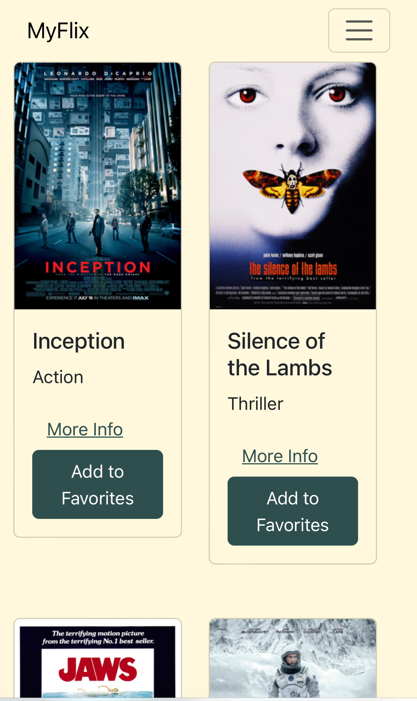
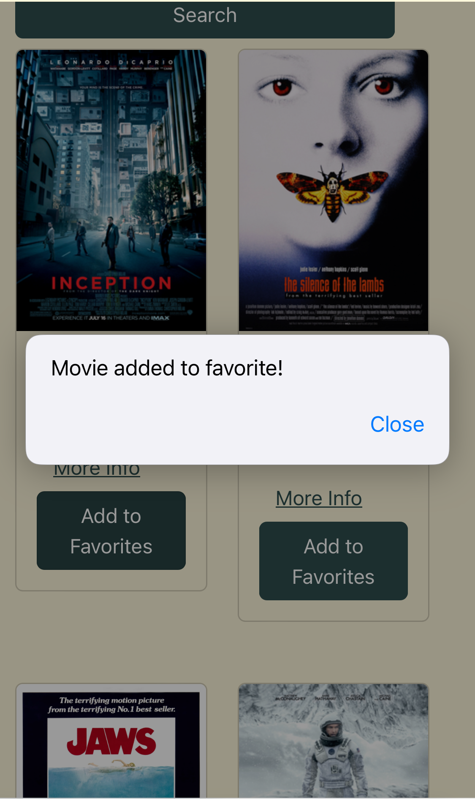
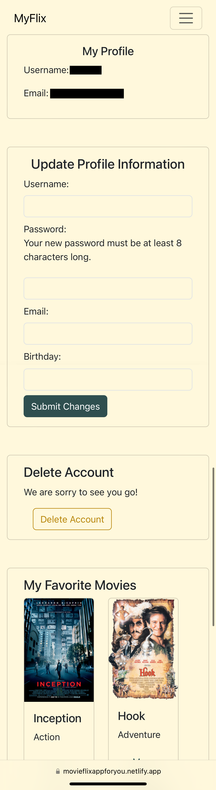

myFlix App


MERN-Stack | React Bootstrap | Redux | Postman | Heroku | MongoDB | Single-Page Application (SPA)
The rationale behind the myFlix project was to showcase the capabilities of modern
client-side development
using React, and to create an engaging and user-friendly interface for interacting with a movie database.
This project was initiated as a part of a personal learning achievement to enhance my full-stack development
skills, particularly in client-side development. Historically, web pages were server-rendered, leading to
less interactive user experiences. With the advent of technologies like React, client-side development has
become crucial for delivering high-quality web applications.




The Problem
The primary objective was to build the client-side for the myFlix app, which interfaces with a previously
developed REST API and database.
The aims were to:
- Create a user-friendly interface for accessing and managing movie information.
- Implement essential views and features derived from user stories.
- Ensure the app is maintainable, readable, and showcases best practices in full-stack JavaScript development.
Tech Stack Explained
The myFlix project is a full-stack web application designed to provide users with information about movies
and manage their personal movie preferences. Built using the MERN stack (MongoDB, Express, React, and Node.js),
the project integrates a client-side interface with an existing server-side codebase to deliver a seamless and
dynamic user experience.

Lessons Learned
Server-Side
The app's functionality depends on fetching and sending data to the server-side API.
- Goal: To ensure seamless communication between the client-side and the REST API.
- Skills and Tools: REST principles.
- What went well: Successfully set up API calls to fetch and manipulate data.
- What didn’t go well: Handling API endpoints required additional effort.
- Challenges: Managing asynchronous data fetching and error handling. Solved by implementing error boundaries
and loading states.
- Decisions: Used postman and console logs to find the error in the endpoints.
Client-Side
Creating Core Components and Views form the backbone of the application, providing
essential functionality and user interfaces.
- Goal: To implement the Main View, Single Movie View, Login View, Signup View, and Profile View.
- Skills and Tools: React, ES2015+, CSS, Bootstrap.
- What went well: Successfully created reusable and maintainable components.
- What didn’t go well: Initial misalignment in UI designs which required adjustments.
- Challenges: Ensuring components were both reusable and met the design criteria. Solved by iterating on
design and code refactoring.
- Decisions: Utilized functional components and hooks for state management due to their simplicity and
efficiency.